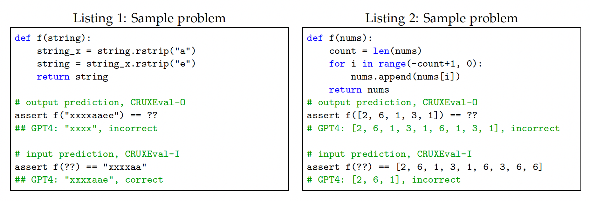

CRUXEval#
Note
CRUXEval (Code Reasoning, Understanding, and eXecution Evaluation) is a benchmark consisting of 800 Python functions and input-output pairs. The benchmark consists of two tasks, CRUXEval-I (input prediction) and CRUXEval-O (output prediction).

The benchmark was constructed as follows: first, we use Code Llama 34B to generate a large set of functions and inputs. The outputs are generated by executing the functions on the inputs. Second, we filter the set so that our benchmark only consists of short problems with low computation and memory requirements, problems which a good human programmer should be able to do without extra memory in a minute or so. Third, we randomly select 800 samples passing the filter, ensuring the benchmark is both small enough to easily run but large enough to reliably see performance differences among various models.
Evaluation#
We use \(N = 100\) samples for all non-GPT models and \(N = 10\) samples for GPT models. We report both pass@1 scores \((T = 0.2)\) and pass@5 scores \((T = 0.8)\).
Prompts#
def make_direct_output_prompt(s):
code, input = s
return f"""You are given a Python function and an assertion containing an input to the function. Complete the assertion with a literal (no unsimplified expressions, no function calls) containing the output when executing the provided code on the given input, even if the function is incorrect or incomplete. Do NOT output any extra information. Provide the full assertion with the correct output in [ANSWER] and [/ANSWER] tags, following the examples.
[PYTHON]
def f(n):
return n
assert f(17) == ??
[/PYTHON]
[ANSWER]
assert f(17) == 17
[/ANSWER]
[PYTHON]
def f(s):
return s + "a"
assert f("x9j") == ??
[/PYTHON]
[ANSWER]
assert f("x9j") == "x9ja"
[/ANSWER]
[PYTHON]
{code}
assert f({input}) == ??
[/PYTHON]
[ANSWER]
"""
def make_cot_output_prompt(s):
code, input = s
return f"""You are given a Python function and an assertion containing an input to the function. Complete the assertion with a literal (no unsimplified expressions, no function calls) containing the output when executing the provided code on the given input, even if the function is incorrect or incomplete. Do NOT output any extra information. Execute the program step by step before arriving at an answer, and provide the full assertion with the correct output in [ANSWER] and [/ANSWER] tags, following the examples.
[PYTHON]
def f(s):
s = s + s
return "b" + s + "a"
assert f("hi") == ??
[/PYTHON]
[THOUGHT]
Let's execute the code step by step:
1. The function f is defined, which takes a single argument s.
2. The function is called with the argument "hi", so within the function, s is initially "hi".
3. Inside the function, s is concatenated with itself, so s becomes "hihi".
4. The function then returns a new string that starts with "b", followed by the value of s (which is now "hihi"), and ends with "a".
5. The return value of the function is therefore "bhihia".
[/THOUGHT]
[ANSWER]
assert f("hi") == "bhihia"
[/ANSWER]
[PYTHON]
{code}
assert f({input}) == ??
[/PYTHON]
[THOUGHT]
"""
def make_direct_input_prompt(s):
code, output = s
return f"""You will be given a function f and an output in the form f(??) == output. Find any input such that executing f on the input leads to the given output. There may be multiple answers, but you should only output one. In [ANSWER] and [/ANSWER] tags, complete the assertion with one such input that will produce the output when executing the function.
[PYTHON]
def f(my_list):
count = 0
for i in my_list:
if len(i) % 2 == 0:
count += 1
return count
assert f(??) == 3
[/PYTHON]
[ANSWER]
assert f(["mq", "px", "zy"]) == 3
[/ANSWER]
[PYTHON]
def f(s1, s2):
return s1 + s2
assert f(??) == "banana"
[/PYTHON]
[ANSWER]
assert f("ba", "nana") == "banana"
[/ANSWER]
[PYTHON]
{code}
assert f(??) == {output}
[/PYTHON]
[ANSWER]
"""
def make_cot_input_prompt(s):
code, output = s
return f"""You will be given a function f and an output in the form f(??) == output. Your task is to find any input such that executing f on the input leads to the given output. There may be multiple answers, but only output one. First, think step by step. You MUST surround the answer with [ANSWER] and [/ANSWER] tags. Express your answer as a passing assertion containing the input and the given output.
[PYTHON]
def f(x):
return x + 1
assert f(??) == 17
[/PYTHON]
[THOUGHT]
To find an input such that executing f on the input leads to the given output, we can work backwards from the given assertion. We know that f(??) == 17.
Since the function f(x) returns x + 1, for f(??) to be equal to 17, the value of ?? should be 16.
[/THOUGHT]
[ANSWER]
assert f(16) == 17
[/ANSWER]
[PYTHON]
{code}
assert f(??) == {output}
[/PYTHON]
[THOUGHT]
"""